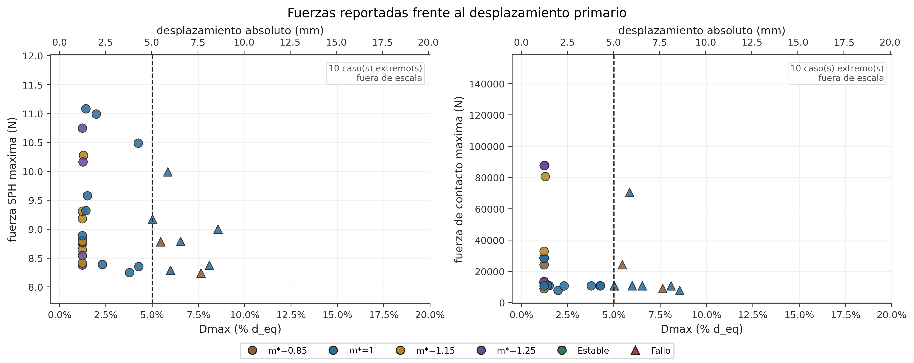
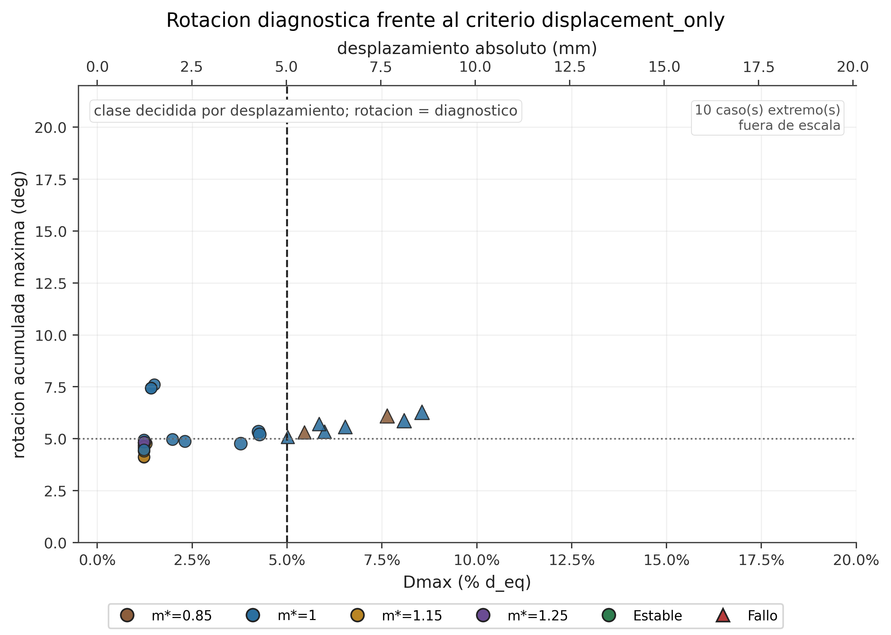

Variables barridas
- Altura hidraulica H (m)
- 0.175, 0.200, 0.210, 0.225, 0.250
- Friccion bloque-playa, mu
- 0.300 a 0.860 (23 niveles)
- Masa relativa m*
- 0.85, 1.00, 1.15, 1.25
- Pendiente evaluada
- 1:10, 20
Esta pagina concentra lo que viene despues de fijar dp=0.003 m: piloto, batch2, batch3, batch4 y AL1. AL2 no se incluye hasta que termine y exista export oficial.
La clase se decide por displacement_only: fallo si Dmax > 5% d_eq. La rotacion, las fuerzas y las gauges son diagnosticas. En todos los graficos relevantes el desplazamiento aparece en porcentaje y en milimetros.
La geometria base del canal y el bloque se mantiene como marco comun, pero esta pagina no representa una simulacion unica. Resume una familia de casos con condiciones hidraulicas, friccion y masa barridas.





| Lote | Casos OK | Estables | Fallos | Dmax mediano |
|---|---|---|---|---|
| AL1 | 8 | 7 | 1 | 1.25% |
| Batch2 | 8 | 5 | 3 | 3.05% |
| Batch3 | 10 | 4 | 6 | 7.31% |
| Batch4 masa | 11 | 6 | 5 | 4.28% |
| Piloto | 5 | 2 | 3 | 5.02% |
Los datos fuente estan en master_production_story.csv. Los casos parciales se conservan como diagnostico, no como evidencia oficial para entrenar o cerrar frontera.
Esta pagina no prueba convergencia adicional de dp. Usa la resolucion operativa ya elegida para construir una frontera practica en H, mu y m*. La evidencia fuerte es el margen continuo al umbral; la clase estable/fallo es una discretizacion de ese margen.
Convencion visual: verde = ESTABLE, rojo = FALLO, gris = parcial/no oficial.